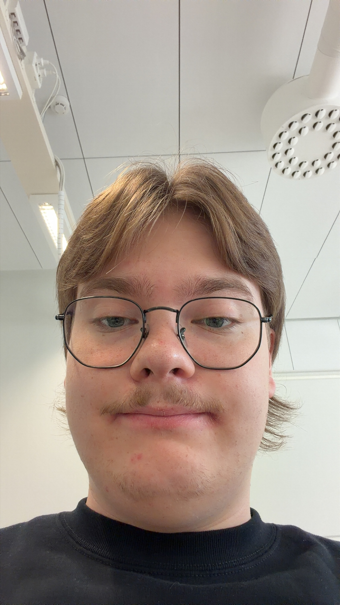

Esittely

Terve, nimeni Tiitus ja opiskelen tietojenkäsittelyn tradenomin tutkintoa.
Olen kiinnostunut tietotekniikasta. Opintojeni aikana olen päässyt tutustumaan erilaisiin ohjelmointikieliin, tietokantoihin ja verkkosivujen rakentamiseen.
Olen myös työskennellyt ICT-tukihenkilön tehtävissä, joten minulla on kokemusta käyttäjien auttamisesta ja teknisten ongelmien ratkaisemisesta.
Osaaminen
Ohjelmointi ja verkkosivut
Olen opiskellut HTML:n, CSS:n ja JavaScriptin perusteita. Osaan rakentaa yksinkertaisia verkkosivuja ja lisätä niihin JavaScriptillä toiminnallisuuksia.
Tietokannat
Olen opiskellut SQL:n perusteita ja oppinut käsittelemään tietokantoja sekä hakemaan ja muokkaamaan niissä olevaa tietoa.
ICT-tukihenkilön työtehtävät
Yksi vahvuuksistani on ICT-tukihenkilön työtehtävät, koska olen työskennellyt kyseisessä roolissa. Työssä olen saanut kokemusta teknisten ongelmien selvittämisestä, käyttäjien auttamisesta ja erilaisista IT-ympäristöistä.
Taitoja
- HTML
- CSS
- JavaScript
- SQL
- Office365
- Ms Intune
- Windows Server
- Verkkolaitteet
- Tietoliikenneverkot
- Tekninen ongelmanratkaisu
- Käyttäjien tukeminen
Harrastukset ja kiinnostuksen kohteet
Harrastan salibandya ja pidän liikunnasta.
Olen myös kiinnostunut penkkiurheilusta ja seuraan mielelläni erilaisia urheilulajeja ja niiden tapahtumia.
Vapaa-ajallani olen oman elämäni elokuvakriitikko ja pidän myös kirjojen lukemisesta.
Yhteystiedot
Voit ottaa minuun yhteyttä sähköpostitse: